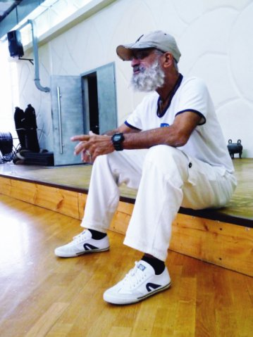
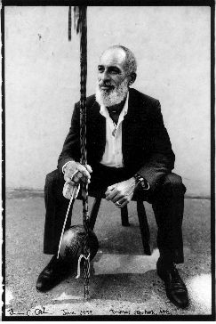
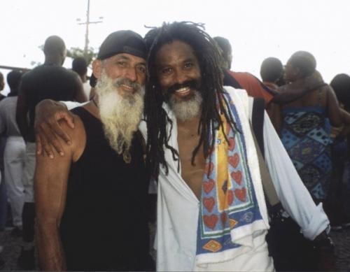
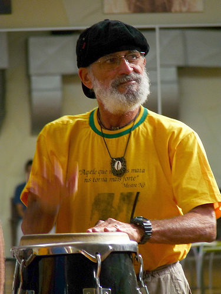
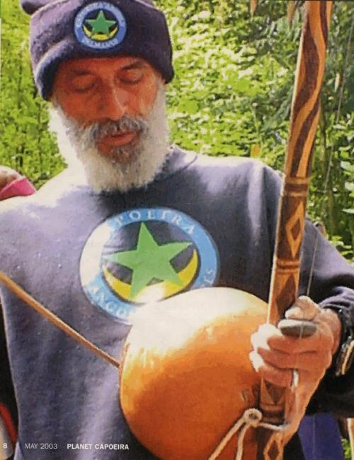

Mestre Nô
Лучше один раз увидеть.





«Когда я выхожу в роду, весь мир перестает для меня существовать, а мое сердце бьется в унисон с ритмом анголы. Это не только игра, это волшебная тропа воина, по которой я осторожно ступаю, целеустремленно направляясь вперед, до конца».
Норивал Морейра ди Оливейра (Norival Moreira de Oliveira), известный в мире капоэйры, как местре Но (Mestre Nô). Появился на свет 22 июня 1945 года на острове Итапарика (Itaparica), находящемся недалеко от Сальвадора. В 7 лет, вместе с семьёй переехал в Массарандубу (порт. Massaranduba) – один из бедных районов „нижнего города“ в Сальвадоре, недалеко от церкви Igreja do Bonfim.
Первые уроки капоэйры получил от своего деда Олегарио (Olegario), именно Олегарио дал мощнейший стимул юному Норивалу для занятий капоэйрой. В 12 лет, семья снова переехала, теперь уже в Сальвадор, где Норивал приобщился к капоэйре, познакомившись с бесстрашными уличными братьями-капоэйристами — мастерами Нилтон (Nilton) и Куика (Cuica). Они стали приводить мальчика на уличные роды своего мастера — местре Пирро (Mestre Pirró), который устраивал эти роды со своим учителем местре Зека (mestre Zeca). Кстати, местре Канжикинья (mestre Canjiquinha) великий капоэйрист и восхитительный игрок на беримбау, по его собственным словам, учился игре на беримбау именно у местре Зека. Вместе с этими 4 мя мастерами Норивал и продолжил свои занятия. Позднее местре Но отметил, что наибольшее влияние на его развитие оказали мастера Нилтон и Пирро.
Прозвище Но (Nô) Норивал получил от своего брата, и оно прижилось среди мастеров, потому что им сложно было выговаривать непривычное имя Норивал.
В 1964 году, в 19 лет, Но начал преподавать капоэйру и открыл свою первую академию — Academia De Capoeira Angola Retintos. В 1969 году была создана Academia de Capoeira Angola Orixas da Bahia, существующая до сих пор под руководством местре Динелсона (mestre Dinelson). 20 ноября 1979 года местре Но основал Grupo de Capoeira Angola Palmares da Bahia, известную теперь как Associacao Cultural Brazileira de Capoeira Angola Palmares.
В 1970-х годах участвовал в родах, проводимых Местре Валдемаром (Mestre Waldemar) в Сальвадоре, где в то время собирались величайшие мастера капоэйры, такие как Валдемар (Waldemar), Траира (Traira), Кобринья Верди (Cobrinha Verde), Канжикинья (Canjiquinha) и многие другие.
«Раньше, в дни моей молодости, капоэйра была менее жестока и более опасна, а сегодня она более жестока и менее опасна. В прошлом капоэйра была более опасной, так как капоэйристы полностью посвящали себя основным принципам искусства, которыми в настоящее время пренебрегают. До этого искусство капоэйры не было столь жестоким, но его практиковало меньшее количество людей, и было меньше насилия».
Местре Но обучил тысячи капоэйристов, за что получил прозвище Мастер Мастеров (Mestre dos Mestres). Сегодня он живёт в районе Бока ду Риу (Boca do Rio) в Сальвадоре с женой, детьми и внуками. Различные мастера приглашают его для участия в семинарах по всему миру, чтобы получить частичку знания от этого великого человека и капоэйриста.
«Капоэйра распространялась очень дезорганизованным образом, и сейчас практикующие это искусство не пытаются сосредоточиться на основных ее принципах. Подобные капоэйристы не в состоянии выражать свое умение сквозь призму искусства, и поэтому используют насилие как источник силы и агрессии. Раньше истинный капоэйрист входил в роду, играл, одерживал победу над соперником, разбивал тому голову… но когда выходил из круга, он ни на секунду не терял бдительности, всегда был внимательным, подозрительным и готовым защитить себя от любой атаки. Он всегда был настороже. А сейчас — нет.
Сегодня капоэйрист выходит в роду, выполняет ряд глупых движений, дерется, прыгает, и как только сделает все элементы, которые знает — всё, он сломан. После роды он направляется в бар и пьёт пиво, забыв обо всем на свете и сидя спиной к входной двери.… Раньше капоэйра была менее жестокой и более опасной, в то время как сейчас она более жестока и менее опасна.
Капоэйру не преподают на основании главных принципов, не обучают, как вести себя во время роды, равно как и в повседневной жизни. Многие практикуют это искусство в эстетических целях, ради его красоты и очарования, или чего-то еще, что представляется им романтичным – поэтому они просто решают заняться капоэйрой. В настоящее время, капоэйру не ценят в качестве жизненной философии.
Я многому научился за свою долгую жизнь, продолжаю учиться, и буду учиться до самой смерти. Я многое могу сказать об основных принципах капоэйры, но на понимание этого требуются годы. Эти базовые принципы применимы и к игре, которая больше чем просто рода капоэйры; эта рода зовется жизнью, что мы играем день ото дня, в которой никто никому не принадлежит, и каждый сам по себе. То, что мы привносим в роду, то мы привносим и в жизнь».
Местре Но
материалы взяты с сайтов:
http://www.capoeira-palmares.fr/
http://capoeirapalmares.freewebsites.com/
http://www.capoeirapalmares.co.uk
By: Магистр Гвоздь (gs_akim)
Jogo de Mestres: Nô e Cobra Mansa
Mestre Braulino e Mestre Nô - Floripa, 1990
Jogo de Mestres: Augusto Januário e Nô
Jogo de Mestres: João Pequeno e Nô
Jogo de Mestres: Bola Sete e Nô
Jogo de Mestres: Nô e Acordeon
Mestres Nô e Bozó
Mestre No and Mestre Alabama
Подолжение… Mestres: Nô e Cobra Mansa
(смотрим на 4 мин 30сек)
Roda do Milênio (Parte 5)